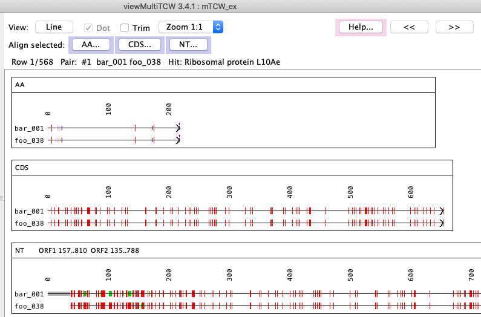

|
viewMultiTCW - View and Query Multiple Species
Pair and MSA Alignments
Alignments
Cluster table with MSA

| Pair table with Pairwise

|
The Hit Table and Sequence Details also have the Pairwise... option, and the Sequence Table
has the MSA... option.
If there are only protein (AA) sequences in the database, only the AA options described below will be available.
|
The Pairwise... drop-down has the options shown on the right, where all options use dynamic programming for the selected sequence(s).
The "for one pair" options are enabled when only one pair is selected.
| 
|
AA, CDS and NT alignments of a pair. The text alignment can be viewed by clicking the AA, CDS or NT buttons.

Menu for the CDS text alignment:
|
Text alignment of the CDS showing matches.
The '|' are mutations in synonymous codons, the '*' mutations in nonsynonymous codons.

|
When the database is built, the cluster MSA is computed in stored in the database.


| The MSA... drop-down has the options shown on the right, where all options execute the MSA program for the set of selected sequences.
AA is the translated ORF, CDS is the un-translated ORF, and NT is the entire transcript.
|
|
The display is the same as shown above for MSAdb.
|


{kind=link}
{kind=link}
{kind=link}